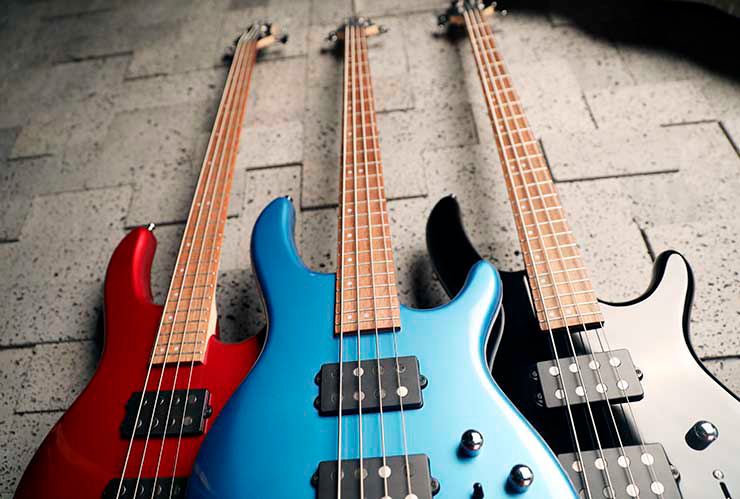

Бас-гитараБас-гитара — струнно-щипковый электрический музыкальный инструмент, предназначенный для игры в басовом диапазоне. На нём играют преимущественно пальцами, но допустима и игра медиатором. В сочетании с ударной установкой создаёт ритм-секцию. Помимо электрической бас-гитары существуют также акустический вариант бас-гитары, встречающийся в музыке гораздо реже, но он относится к другому классу инструментов (не является электрофоном), и их не следует путать. |